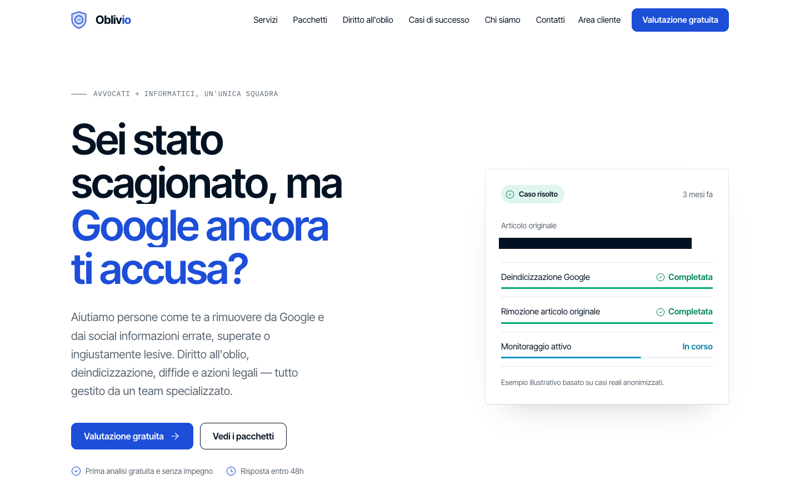

Direzione 1
Cancellazione
L'oblio raccontato con la tipografia: allo scroll le parole che fanno male si barrano, vengono oscurate come in un documento redatto e restano solo come traccia sbiadita, mentre compare la frase che conta. Pagina bianca e silenziosa, testo in inchiostro e un solo colore forte, il blu del logo; il verde del sito compare solo quando qualcosa è stato rimosso. Per chi vuole sentire che qualcosa di pesante può davvero sparire, senza toni drammatici.
Inter Tight + IBM Plex Mono
Cosa corregge del sito attuale
- Due blu diversi (logo #1D4ED8 e un secondo blu sulle CTA, ora vietato) → un solo blu, quello del logo, per CTA e link: testo bianco sulla CTA 5.47 → 6.70:1
- Badge 'Caso risolto' (testo quasi bianco su verde chiaro, circa 1.1:1) → inchiostro #031222 su verde al 12% (≈#E0F5EE), 16.58:1
- Il verde del sito torna con un solo significato: 'Completata' in #008658 (4.61:1 su bianco) e barre #00AA6F; 'In corso' in azzurro #097EA4 (4.63:1)
- Hover CTA prima su un blu fuori palette → inchiostro #031222, bianco sopra 18.86:1